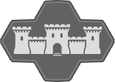

<!DOCTYPE html>
<html style="height: 100%; width:100%; margin: 0;">
<head>
    <style>
        *{font-family: 'Noto Sans';}
        /*markers lower opacity on hover*/
        .leaflet-marker-icon{
            transition: opacity 1.5s ease-in-out;
        }
        .leaflet-marker-icon:hover{
            opacity: .1;
        }
        /* zoom button style (? is it? have no memory of making this) */
        .leaflet-bar a {
            background-color: rgba(255, 255, 255, 0.4)!important;
        }
        .leaflet-bar a:hover,
        .leaflet-bar a:focus {
            background-color: rgba(244, 244, 244, 0.7)!important;
        }
        .leaflet-bar a.leaflet-disabled {
            background-color: rgba(244, 244, 244, 0.2)!important;
            color: rgba(86, 86, 86, 0.4)!important;
            }


        /* change layers ansicht */
        .leaflet-control-layers-toggle{
            height: 0px!important;
        }
        .leaflet-control-layers {
            color:rgba(0, 0, 0, 0.4)!important;
            opacity: 0.5;
            background-color: rgba(197, 212, 221, 0.8)!important;
            transition: .2s;
        }
        .leaflet-control-layers:hover {
            opacity: 1;
        }
        .leaflet-control-layers:before{
            padding-left: 25px;
            padding-right: 25px;
            padding-top: 20px;
            font-size: 20px;
            font-weight: bold;
            content:"Map Legend";
            color:rgba(0, 0, 0, .7);
        }

        /*radio/checkbox button*/
        input[type=checkbox]:checked + span{
            color:rgba(0, 0, 0, 0.7) !important;
            font-weight: bold;
        }
        /* layericon */
        .ico{
            vertical-align: middle;
            height: 17px;
        }
        /* change layers ansicht end*/

        /*POPUP STYLE*/
        .leaflet-popup-content-wrapper {
            /*max-width: 200px;
            max-height: 110px;
            overflow-y: auto;
            overflow-x: hidden;*/
            text-align: center!important;
            background: rgba(98, 98, 98, 0.8)!important;
            color: rgb(220, 220, 220)!important;
            font-size: 13px!important;
            line-height: 24px!important;
            border-radius: 0px!important;
            border: 2px solid rgba(185, 185, 185, 0.8)!important;
            box-shadow:rgba(0, 0, 0, .5) 0px 0px 10px!important;
        }
        .leaflet-popup-content {
            padding-right: 15px!important;
            padding-left: 15px!important;
            margin-right: 0px!important;
            margin-left: 0px!important;
            max-width: 200px!important;
            max-height: 110px!important;
            overflow-y: auto;
            overflow-x: hidden;
            }
        .leaflet-popup-content-wrapper a {
            color: rgba(200, 200, 200, 0.1)!important;
        }
        /* the triangle */
        .leaflet-popup-tip { 
            background: rgba(185, 185, 185, .3)!important;
            border: 2px solid rgba(185, 185, 185, 0.8)!important;
            box-shadow: rgba(0, 0, 0, .3) 0px 0px 10px!important;
        }
        .leaflet-container a.leaflet-popup-close-button {
            color: rgba(185, 185, 185, 0.8)!important;
        }
        .leaflet-container a.leaflet-popup-close-button:hover {
            color: #999;
        }
        /*POPUP STYLEs end*/


        /* TOOLTIP STYLE */
        /* no triangle at tooltip */
        .leaflet-tooltip-top:before, 
        .leaflet-tooltip-bottom:before, 
        .leaflet-tooltip-left:before, 
        .leaflet-tooltip-right:before {
            border: none !important;
        }
        /* TOOLTIPS STYLE end*/
    </style>

    <title>Map of Valentia</title>

    <meta name="viewpoint" content="width=device-width, initial-scale=1.0">

    <!-- leflet import -->
    <link rel="stylesheet" href="scripts\leaflet\leaflet.css">
    <script src="scripts\leaflet\leaflet.js"></script>
    <!-- tree import-->
    <link rel="stylesheet" href="scripts\tree\L.Control.Layers.Tree.css">
    <script src="scripts\tree\L.Control.Layers.Tree.js"></script>

    <!-- icons import-->
    <script src="scripts\my_scripts\icons.js"></script>
    <!-- tooltip_styles import -->
    <link rel="stylesheet" href="scripts\my_scripts\tooltip_styles.css">
    <link rel="preconnect" href="https://fonts.googleapis.com">
    <link rel="preconnect" href="https://fonts.gstatic.com" crossorigin>
    <link href="https://fonts.googleapis.com/css2?family=Noto+Sans&display=swap" rel="stylesheet">

</head>
<body style="height: 100%; width:100%;  margin: 0;">

<!-- map holder -->
<div id="map" style="margin-left:auto; margin-right:auto; width:100%; height: 100%; background: #6B7983">
</div>

<script type="text/javascript">
    //variables
    var mapSW = [0, 8192],
        mapNE = [8192, 0];
    var customMinZoom = 1;
    var customMaxZoom = 4;
    //variables end

    // Declare Map Object
    var map = L.map('map').setView([0, 0], customMinZoom);

    // Reference the tiles
    var default_layer = L.tileLayer('images/tiles/{z}/{x}/{y}.png',{
                        minZoom: customMinZoom,
                        maxNativeZoom: customMaxZoom,
                        maxZoom: customMaxZoom+1,
                        noWrap: true,
                        crs: L.CRS.Simple,}
                        ).addTo(map);
                            // Reference the tiles
    var biomes_layer = L.tileLayer('images/biomes/{z}/{x}/{y}.png',{
                        minZoom: customMinZoom,
                        maxNativeZoom: customMaxZoom,
                        maxZoom: customMaxZoom+1,
                        noWrap: true,
                        crs: L.CRS.Simple,}
                        );

    // map bounces back when you try to leave
    map.setMaxBounds(new L.LatLngBounds(
        map.unproject(mapNE, (customMaxZoom+1)),
        map.unproject(mapSW, (customMaxZoom+1))
    ));
    // no zoom on doubleclick
    map.doubleClickZoom.disable();


    /* =========================
       MARKERS and POPUPS
       =========================*/
    var zoom0 = [];
    var zoom1 = [];
    var zoom2 = [];
    var zoom3 = [];

    // HELPERS

    function distance_adjust(distance) {
        return Math.round(distance*0.000041);
    }

    function distance_to_walkinghours(distance) {
        return Math.floor((distance_adjust(distance)/3.5)/24) + ' days and ' + ((distance_adjust(distance)/3.5)%24).toFixed(1) + ' hours';
    }

    var latlngmarker = L.marker([-76, 94], {
        draggable:true,
        icon: doticon,
        opacity: .5
    }).bindPopup()
    .addTo(map)
    .on('click', function(e){
        latlngmarker.getPopup().setContent((e.latlng.lat.toFixed(1)) +
                                           ", " +  (e.latlng.lng.toFixed(1)))
    });

    var distance_marker_1 = L.marker([76, 6], {
        draggable:true,
        icon: x_marker,
        opacity: .8
    }).bindPopup()
    .on('click', function(e){
        distance_marker_1.getPopup().setContent(
            '<b>Distance</b>:<br> ' + distance_adjust(map.distance(e.latlng, distance_marker_2.getLatLng())).toString() + 'km<br><br>'+
            '<b>Walking Time</b>:<br> ' + distance_to_walkinghours(map.distance(e.latlng, distance_marker_2.getLatLng())).toString()
            )
    });

    var distance_marker_2 = L.marker([-72, -117], {
        riseOnHover: true,
        draggable:true,
        icon: y_marker,
        opacity: .8
    }).bindPopup()
    .on('click', function(e){
        distance_marker_2.getPopup().setContent(
            '<b>Distance</b>:<br> ' + distance_adjust(map.distance(e.latlng, distance_marker_1.getLatLng())).toString() + 'km<br><br>'+
            '<b>Walking Time</b>:<br> ' + distance_to_walkinghours(map.distance(e.latlng, distance_marker_1.getLatLng())).toString()
            )
    });

    var helpers = [latlngmarker, distance_marker_1, distance_marker_2]

    // zoom the map to the polyline
    /*map.fitBounds(polyline.getBounds());*/


    // BUILDINGS
    var castles = [];

    var marble_palace = (L.marker([-47.5, 58.8], {icon: castle_i})
    .bindPopup("<big>&#x1F661</big> <b>Marble Palace</b> <big>&#128611</big><br>\
            A small but beautiful palace made of marble for one Lord Petyre."));
    castles.push(marble_palace);
    zoom3.push(marble_palace);


    var cathedrals = [];

    var colig = (L.marker([-26, 18], {icon: colig_i})
    .bindPopup("<big>&#x1F661</big> <b>Colig</b> <big>&#128611</big><br>\
               Widely known as the biggest magic-teaching school in Valentia."));
    zoom1.push(colig);

    var crypts = [];

    var forts = [];

    var lighthouses = [];

    var silverport_western_lighthouse = (L.marker([-74, -132], {icon: lighthouse_i})
    .bindPopup("<b>Silverport Western Lighthouse</b>"));
    lighthouses.push(silverport_western_lighthouse);
    zoom2.push(silverport_western_lighthouse);

    var silverport_eastern_lighthouse = (L.marker([-76.1, -109], {icon: lighthouse_i})
    .bindPopup("<b>Silverport Eastern Lighthouse</b>"));
    lighthouses.push(silverport_eastern_lighthouse);
    zoom2.push(silverport_eastern_lighthouse);

    var stables = [];

    var strongholds = [];

    var taverns = [];

    var temples = [];

    var atheas_sanctuary = (L.marker([-62, -85], {icon: temple_i})
    .bindPopup("<big>&#x1F661</big> <b>Athea's Sanctuary</b> <big>&#128611</big><br>\
               Untouched by wars, this temple still looks like it did the day it was built -\
               though that day has been forgotten even by the history books."));
    temples.push(atheas_sanctuary);
    zoom2.push(atheas_sanctuary);

    var towers = [];

    var tower_of_trust = (L.marker([1, -24], {icon: tower_i})
    .bindPopup("<big>&#x1F661</big> <b>Tower of Trust</b> <big>&#128611</big><br>\
               ..."));
    towers.push(tower_of_trust);
    zoom3.push(tower_of_trust);

    var tower_of_felicity = (L.marker([2, -13], {icon: tower_i})
    .bindPopup("<big>&#x1F661</big> <b>Tower of Felicity</b> <big>&#128611</big><br>\
               ..."));
    towers.push(tower_of_felicity);
    zoom3.push(tower_of_felicity);

    var tower_of_woe = (L.marker([-7, -19], {icon: tower_i})
    .bindPopup("<big>&#x1F661</big> <b>Tower of Woe</b> <big>&#128611</big><br>\
               ..."));
    towers.push(tower_of_woe);
    zoom3.push(tower_of_woe);

    var windmills = [];
    // BUILDINGS end

    // LANDMARKS
    var altars = [];

    var bridges = [];

    var dangerzones = [];

    var monoliths = [];

    var obelisks = [];

    var crows_point = (L.marker([80.1, -10.8], {icon: obelisk_i})
    .bindPopup("<big>&#x1F661</big> <b>Crow's Point</b> <big>&#128611</big><br>\
                An ancient, 25m tall obelisk of onyx. Most likely of magical nature."));
    obelisks.push(crows_point);
    zoom3.push(crows_point);

    var ruins = [];

    var fallen_city_of_ardour = (L.marker([3.9, 6.7], {icon: ruin_i})
    .bindPopup("<big>&#x1F661</big> <b>Fallen City of Ardour</b> <big>&#128611</big><br>\
                ..."));
    obelisks.push(fallen_city_of_ardour);
    zoom2.push(fallen_city_of_ardour);

    var the_grave = (L.marker([22.7, 64.3], {icon: dungeon_i})
    .bindPopup("<big>&#x1F661</big> <b>The Grave</b> <big>&#128611</big><br>\
                The dungeon which once held archdevil Jaqon,\
                imprisoned there for disobedience by the ruler of all devils."));
    obelisks.push(the_grave);
    zoom2.push(the_grave);

    var shipwrecks = [];

    var shrines = [];

    var standing_stones = [];

    var thorns = [];

    var waterfalls = [];

    var whirlpools = [];
    // LANDMARKS end

    // LOCATIONS
    var alchemists = [];

    var caves = [];

    var albibabas_hideout = (L.marker([-61, -113], {icon: cave_i})
    .bindPopup("<big>&#x1F661</big> <b>Alibaba's Hideout</b> <big>&#128611</big><br>\
                Where our Party was completed."));
    caves.push(albibabas_hideout);
    zoom2.push(albibabas_hideout);

    var docs = [];

    var dungeons = [];

    var forges = [];

    var grainfarms = [];

    var graveyards = [];

    var mines = [];

    var ravenskulls = [];

    var yellow_ravenskulls = (L.marker([-3, -60], {icon: ravenskull_i})
    .bindPopup("<big>&#x1F661</big> <b>Ravenskull Hideout</b> <big>&#128611</big><br>\
            ..."));
    ravenskulls.push(yellow_ravenskulls);
    zoom3.push(yellow_ravenskulls);

    var siberia_ravenskulls = (L.marker([21, -138], {icon: ravenskull_i})
    .bindPopup("<big>&#x1F661</big> <b>Ravenskull Hideout</b> <big>&#128611</big><br>\
            ..."));
    ravenskulls.push(siberia_ravenskulls);
    zoom3.push(siberia_ravenskulls);

    var green_ravenskulls_1 = (L.marker([-25, 70], {icon: ravenskull_i})
    .bindPopup("<big>&#x1F661</big> <b>Ravenskull Hideout</b> <big>&#128611</big><br>\
            ..."));
    ravenskulls.push(green_ravenskulls_1);
    zoom3.push(green_ravenskulls_1);

    var green_ravenskulls_2 = (L.marker([-66, 67], {icon: ravenskull_i})
    .bindPopup("<big>&#x1F661</big> <b>Ravenskull Hideout</b> <big>&#128611</big><br>\
            ..."));
    ravenskulls.push(green_ravenskulls_2);
    zoom3.push(green_ravenskulls_2);

    var storm_isles_ravenskulls = (L.marker([66, 61], {icon: ravenskull_i})
    .bindPopup("<big>&#x1F661</big> <b>Ravenskull Hideout</b> <big>&#128611</big><br>\
            ..."));
    ravenskulls.push(storm_isles_ravenskulls);
    zoom3.push(storm_isles_ravenskulls);

    var tova_ravenskulls = (L.marker([20, 117], {icon: ravenskull_i})
    .bindPopup("<big>&#x1F661</big> <b>Ravenskull Hideout</b> <big>&#128611</big><br>\
            ..."));
    ravenskulls.push(tova_ravenskulls);
    zoom3.push(tova_ravenskulls);

    var vineyards = [];
    // LOCATIONS end

    // SETTLEMENTS
    var camps = [];


    var cities = []

    var antopolia = (L.marker([-2.7, -19], {icon: city_i})
    .bindPopup("<big>&#x1F661</big> <b>Antopolia</b> <big>&#128611</big><br>\
               ..."));
    cities.push(antopolia);
    zoom2.push(antopolia);

    var unnamed_big_city2 = (L.marker([27.1, 40.1], {icon: city_i})
    .bindPopup("<big>&#x1F661</big> <b>unnamed_big_city2</b> <big>&#128611</big><br>\
               ..."));
    cities.push(unnamed_big_city2);
    zoom2.push(unnamed_big_city2);

    var silverport = (L.marker([-72, -117], {icon: city_i})
    .bindPopup("<big>&#x1F661</big> <b>Silverport</b> <big>&#128611</big><br>\
               An orc and an elf, who loved each other. A human and the dwarf whom he refused to execute.\
               They were the founders of the coastal city Silverport, home to the outcasts."));
    cities.push(silverport);
    zoom1.push(silverport);

    var the_grand_city_of_blackwater = (L.marker([72, 45], {icon: city_i})
    .bindPopup("The Grand City of<br>\
                <big>&#x1F661</big> <b>Blackwater</b> <big>&#128611</big><br>\
               ..."));
    cities.push(the_grand_city_of_blackwater);
    zoom1.push(the_grand_city_of_blackwater);

    var kiya = (L.marker([-56.9, 37.8], {icon: city_i})
    .bindPopup("<big>&#x1F661</big> <b>Kiya</b> <big>&#128611</big><br>\
               A city of animal-humanoids such as minotaurs, dragonborn, leonin and others.\
               Though the common races are not forbidden from entering or staying in Kiya,\
               they are not well liked."));
    cities.push(kiya);
    zoom2.push(kiya);


    var hut_villages = [];
    

    var bar_akh = (L.marker([76, 6], {icon: hut_village_i})
    .bindPopup("<big>&#x1F661</big> <b>Bar-Akh</b> <big>&#128611</big><br>\
               ..."));
    zoom1.push(bar_akh);
    hut_villages.push(bar_akh);

    var arrog = (L.marker([-42.9, -127.8], {icon: hut_village_i})
    .bindPopup("<big>&#x1F661</big> <b>Arrog</b> <big>&#128611</big><br>\
                An orcish village."));
    hut_villages.push(arrog);
    zoom3.push(arrog);


    var huts = [];


    var legion_camps = [];


    var towns = [];

    // ESTORIA

    var morrog = (L.marker([-39, -122], {icon: town_i})
    .bindPopup("<big>&#x1F661</big> <b>Morrog</b> <big>&#128611</big><br>\
                An orcish town."));
    towns.push(morrog);
    zoom2.push(morrog);

    var ascenathea = (L.marker([-66.5, -56], {icon: town_i})
    .bindPopup("<big>&#x1F661</big> <b>Ascenathea</b> <big>&#128611</big><br>\
                An elvish town."));
    towns.push(ascenathea);
    zoom2.push(ascenathea);

    var khir_burim = (L.marker([-44, -47], {icon: town_i})
    .bindPopup("<big>&#x1F661</big> <b>Khir Burim</b> <big>&#128611</big><br>\
                A dwarf town, allied with the dwarves on Mount Thul."));
    towns.push(khir_burim);
    zoom2.push(khir_burim);

    var ebonhall = (L.marker([-52, -83], {icon: castle_i})
    .bindPopup("<big>&#x1F661</big> <b>Ebonhall</b> <big>&#128611</big><br>\
               A town named after its black stone castle. Extremely hostile towards non-humans."));
    towns.push(ebonhall);
    zoom1.push(ebonhall);

    var thuls_fortress = (L.marker([-43, -34], {icon: stronghold_i})
    .bindPopup("<big>&#x1F661</big> <b>Thul's Fortress</b> <big>&#128611</big><br>\
               A stronghold built directly into Mount Thul, Eastorias highest peak.\
               The dwarves that reside in it know it was built to protect the land,\
               but they forgot who it was supposed to protect them from."));
    towns.push(thuls_fortress);
    zoom2.push(thuls_fortress);


    // PURPLE COUNTRY

    var aen_ethel = (L.marker([54, -9], {icon: castle_i})
    .bindPopup("<big>&#x1F661</big> <b>Aen Ethél</b> <big>&#128611</big><br>\
               An ancient elvish castle town with a recent history of power-crazed monarchs.\
               Rules over central territories of [purple country]. Nerry's birthplace.<br><br>\
               <b>Coat of Arms</b><br>\
               ..."));
    towns.push(aen_ethel);
    zoom1.push(aen_ethel);

    var leoquen = (L.marker([49, -2], {icon: town_i})
    .bindPopup("<big>&#x1F661</big> <b>Leoquen</b> <big>&#128611</big><br>\
               A town of elves and elf sympathizers. Under Aen Ethél rule since 320.<br><br>\
               <b>Coat of Arms</b><br>\
               <a target='_blank' href='images/coat_of_arms/leoquen_coa.png'>\
               </a>")); //vert  in fess point a rabbit salient  copper  in dexter flank a rabbit  copper  in sinister flank a rabbit reversed copper  a chief embattled brettessy argent    drawn with an emoji palette
    towns.push(leoquen);
    zoom2.push(leoquen);

    // TOVA
    var impervious = (L.marker([13.7, 82.7], {icon: town_i})
    .bindPopup("<big>&#x1F661</big> <b>Impervious</b> <big>&#128611</big><br>\
               A town born out of an age-old allience of hill-dwarves and humans native to Tova."));
    cities.push(impervious);
    zoom2.push(impervious);


    // GREEN COUNTRY
    var villages = [];
    var yabuonna = (L.marker([-39.5, 56], {icon: village_i})
    .bindPopup("<big>&#x1F661</big> <b>Yabuonna</b> <big>&#128611</big><br>\
               A pretty village known for its apple farm. Tytus' home."));
    villages.push(yabuonna);
    zoom1.push(yabuonna);

    var chanter = (L.marker([-31.6, 51.3], {icon: village_i})
    .bindPopup("<big>&#x1F661</big> <b>Chanter</b> <big>&#128611</big><br>\
               A small halfling village."));
    villages.push(chanter);
    zoom3.push(chanter);

    // SETTLEMENTS end
    // MARKERS and POPUPS END


    /* =========================
       TOOLTIPS
       =========================*/

    // COUNTRIES
    var countries_options= ({direction: 'center', permanent: true, interactive: true, className: "countries"});

    var estoria = L.tooltip([-58, -68], countries_options)
    .setContent('Estoria')
    .on('click', function() {window.open('https://heroes-of-valentia.boards.net/thread/23/estoria', "_blank")});
    zoom0.push(estoria);

    var siberia = L.tooltip([35, -94], countries_options)
    .setContent('<div style="font:20px Copperplate Gothic Light;line-height: 0.7;">Turquoise<br>Country</div>')
    .on('click', function() {window.open('https://heroes-of-valentia.boards.net/thread/25/siberia', "_blank")});
    zoom0.push(siberia);

    var tova = L.tooltip([26, 85], countries_options)
    .setContent('<div style="font:30px Copperplate Gothic Light;line-height: 0.7;">Flooded<br>Lands<br>of Tova</div>')
    .on('click', function() {window.open('https://heroes-of-valentia.boards.net/thread/26/tova', "_blank")});
    zoom0.push(tova);

    var storm_isles = L.tooltip([72, 55], countries_options)
    .setContent('<div style="font:30px Copperplate Gothic Light;line-height: 0.7;">Storm<br>Isles</div>')
    .on('click', function() {window.open('https://heroes-of-valentia.boards.net/thread/24/storm-isles', "_blank")});
    zoom0.push(storm_isles);

    var yellow_country = L.tooltip([-10, -18], countries_options)
    .setContent('<div style="font:32px Copperplate Gothic Light;line-height: 0.7;">Korisanty</div>')
    .on('click', function() {window.open('https://heroes-of-valentia.boards.net/thread/27/yellow-country', "_blank")});
    zoom0.push(yellow_country);

    var green_country = L.tooltip([-50, 61], countries_options)
    .setContent('Ictus<br>Etelios')
    .on('click', function() {window.open('https://heroes-of-valentia.boards.net/thread/29/green-country', "_blank")});
    zoom0.push(green_country);

    var purple_country = L.tooltip([59, -14], countries_options)
    .setContent('Purple<br>Country')
    .on('click', function() {window.open('https://heroes-of-valentia.boards.net/thread/28/purple-country', "_blank")});
    zoom0.push(purple_country);

    // WATERS
    var dark_water_options_popup = ({direction: 'center', interactive: true, permanent: true, className: "dark_water"});
    var dark_water_options = ({direction: 'center', permanent: true, className: "dark_water"});
    var light_water_options_popup = ({direction: 'center', interactive: true, permanent: true, className: "light_water"});
    var light_water_options = ({direction: 'center', permanent: true, className: "light_water"});

    var waters = [];

    var se_ocean = L.tooltip([4, -20], {direction: 'center', className: "light_water", permanent: true})
    .setContent("<h1>"+
    "<span class='sw_1'>T</span>"+
    "<span class='sw_2'>h</span>"+
    "<span class='sw_3'>e</span>"+
    "<span class='sw_4'> </span>"+
    "<span class='sw_5'>T</span>"+
    "<span class='sw_6'>i</span>"+
    "<span class='sw_7'>n</span>"+
    "<span class='sw_8'>t</span>"+
    "<span class='sw_9'>e</span>"+
    "<span class='sw_10'>d</span>"+
    "<span class='sw_11'> </span>"+
    "<span class='sw_12'>T</span>"+
    "<span class='sw_13'>i</span>"+
    "<span class='sw_14'>d</span>"+
    "<span class='sw_15'>e</span>"+
    "<span class='sw_16'>s</span>"+
    "</h1>")
    zoom0.push(se_ocean);

    var nw_ocean = L.tooltip([4, -20], {direction: 'center', className: "light_water", permanent: true})
    .setContent("<h1>"+
    "<span class='ne_1'> </span>"+
    "<span class='ne_2'>T</span>"+
    "<span class='ne_3'>h</span>"+
    "<span class='ne_4'>e</span>"+
    "<span class='ne_5'> </span>"+
    "<span class='ne_6'>S</span>"+
    "<span class='ne_7'>a</span>"+
    "<span class='ne_8'>v</span>"+
    "<span class='ne_9'>a</span>"+
    "<span class='ne_10'>g</span>"+
    "<span class='ne_11'>e</span>"+
    "<span class='ne_12'> </span>"+
    "<span class='ne_13'>S</span>"+
    "<span class='ne_14'>e</span>"+
    "<span class='ne_15'>a</span>"+
    "<span class='ne_16'>s</span>"+
    "<span class='ne_17'> </span>"+
    "</h1>")
    zoom0.push(nw_ocean);

    var winged_lions_sea = L.tooltip([-35, 132], light_water_options)
    .setContent("<div style='transform: rotate(-55deg); font-size: 28px; opacity:.8;'>Winged Lion's<br>Sea</div>");
    waters.push(winged_lions_sea);
    zoom1.push(winged_lions_sea);

    var the_great_tear = L.tooltip([-60, -0.5], light_water_options)
    .setContent("<div style='transform: rotate(0deg); font-size: 23px; opacity:.8;'>The<br>Great<br>Tear</div>");
    waters.push(the_great_tear);
    zoom1.push(the_great_tear);

    // ESTORIA
    var great_lake_of_raveling = L.tooltip([-47, -55], light_water_options)
    .setContent("<div style='font-size: 14px;'>Great<br>Lake of<br>Raveling</div>");
    waters.push(great_lake_of_raveling);
    zoom2.push(great_lake_of_raveling);

    var bogtrus_shallows = L.tooltip([-38.7, -108], light_water_options_popup)
    .setContent("<div style='font-size: 12px;'>Bogtru's<br>Shallows</div>")
    .bindPopup("<big>&#x1F661</big> <b>Bogtru's Shallows</b> <big>&#128611</big><br>\
                Named after the great warrior Bogtru, fabled and beloved by Estoria's orc population.", {offset: [0, -6]});
    waters.push(bogtrus_shallows);
    zoom2.push(bogtrus_shallows);

    var sunset_pond = L.tooltip([-47.4, -130.8], light_water_options)
    .setContent("<div style='font-size: 10px;'>Sunset<br>Pond</div>");
    waters.push(sunset_pond);
    zoom3.push(sunset_pond);

    var rivera = L.tooltip([-52.9, -75], dark_water_options)
    .setContent("<div style='font-size: 13px; transform: rotate(-10deg);'>Rivera</div>");
    waters.push(rivera);
    zoom3.push(rivera);

    var scava = L.tooltip([-49.4, -95.5], dark_water_options)
    .setContent("<div style='font-size: 13px'>Scava</div>");
    waters.push(scava);
    zoom3.push(scava);

    var scavetta = L.tooltip([-46.7, -102.7], dark_water_options)
    .setContent("<div style='font-size: 11px; transform: rotate(65deg);'>Scavetta</div>");
    waters.push(scavetta);
    zoom3.push(scavetta);

    var tovera = L.tooltip([-65.4, -96], dark_water_options)
    .setContent("<div style='font-size: 12px; transform: rotate(25deg);'>Tovera</div>");
    waters.push(tovera);
    zoom3.push(tovera);

    var silver_bay = L.tooltip([-74, -121], light_water_options)
    .setContent("<div style='transform: rotate(24deg);'>Silver Bay</div>");
    waters.push(silver_bay);
    zoom1.push(silver_bay);

    var the_little_tear = L.tooltip([-71, -85.5], light_water_options)
    .setContent("<div style='font-size: 13px;'>The<br>Little<br>Tear</div>");
    waters.push(the_little_tear);
    zoom1.push(the_little_tear);

    // GREEN COUNTRY

    var noche = L.tooltip([-15.9, 83.5], dark_water_options)
    .setContent("<div style='font-size: 11px; transform: rotate(-10deg);'>Noche</div>");
    waters.push(noche);
    zoom3.push(noche);

    var passio = L.tooltip([-21.9, 85.5], dark_water_options)
    .setContent("<div style='font-size: 11px; transform: rotate(34deg);'>Passio</div>");
    waters.push(passio);
    zoom3.push(passio);

    var sacrato = L.tooltip([-16.4, 69], dark_water_options)
    .setContent("<div style='font-size: 13px; transform: rotate(-34deg);'>Sacrato</div>");
    waters.push(sacrato);
    zoom3.push(sacrato);

    var consacrato = L.tooltip([-34.3, 70.8], dark_water_options)
    .setContent("<div style='font-size: 10px; transform: rotate(30deg);'>Consacrato</div>");
    waters.push(consacrato);
    zoom3.push(consacrato);

    var vistola = L.tooltip([-44, 54.2], dark_water_options)
    .setContent("<div style='font-size: 12px; transform: rotate(70deg);'>Vistola</div>");
    waters.push(vistola);
    zoom3.push(vistola);

    var dalmation_gulf = L.tooltip([-30, 32], light_water_options)
    .setContent("<div style='transform: rotate(-5deg);'>Dalmatian Gulf</div>");
    waters.push(dalmation_gulf);
    zoom2.push(dalmation_gulf);

    var satyr_bay = L.tooltip([-45.8, 23], light_water_options)
    .setContent("Satyr<br>Bay");
    waters.push(satyr_bay);
    zoom2.push(satyr_bay);

    var pp_lake = L.tooltip([-65.5, 77], light_water_options)
    .setContent("PP Lake");
    waters.push(pp_lake);
    zoom2.push(pp_lake);

    var moon_tear = L.tooltip([-53.1, 35.5], light_water_options)
    .setContent("<div style='transform: rotate(-25deg);'>Moon-Tear</div>");
    waters.push(moon_tear);
    zoom2.push(moon_tear);

    var lovelets_crater = L.tooltip([-76.2, 58], dark_water_options_popup)
    .setContent("Lovelet's<br>Crater")
    .bindPopup("<big>&#x1F661</big> <b>Lovelet's Crater</b> <big>&#128611</big><br>\
                A rounded body of freshwater, said to be created by the powerful mage 'Lovelet',\
                who sent a comet filled with water into the desert. Some say they can 'taste the cosmos'.", {offset: [0, -6]});
    waters.push(lovelets_crater);
    zoom2.push(lovelets_crater);

    var soaring_lagoon = L.tooltip([-74.7, 70.5], dark_water_options_popup)
    .setContent("<div style='font-size:10px;'>Soaring<br>Lagoon</div>")
    .bindPopup("<big>&#x1F661</big> <b>Soaring Lagoon</b> <big>&#128611</big><br>\
                A grand exposed coral reef, too hot to even dip a toe in for common folk.\
                locals speak of a dragon sleeping under the reef.", {offset: [0, -6]});
    waters.push(soaring_lagoon);
    zoom3.push(soaring_lagoon);

    // TOVA

    var ry = L.tooltip([8.2, 110.5], dark_water_options)
    .setContent("<div style='font-size: 13px; transform: rotate(-20deg);'>Ry</div>");
    waters.push(ry);
    zoom3.push(ry);

    var the_mirrored_expanse = L.tooltip([21.4, 84], light_water_options)
    .setContent("<div style='font-size: 14px;'>The Guiltless Expanse</div>");
    waters.push(the_mirrored_expanse);
    zoom2.push(the_mirrored_expanse);

    // SIBERIA

    var frozen_lakes = L.tooltip([57.5, -119], light_water_options)
    .setContent("<div style='font-size: 13px;'>Frozen<br>Lakes</div>");
    waters.push(frozen_lakes);
    zoom3.push(frozen_lakes);

    // PURPLE COUNTRY

    var the_dancing_creek = L.tooltip([73.5, 10], dark_water_options)
    .setContent("<div style='font-size: 11px; transform: rotate(0deg);'>The<br>Dancing<br>Creek</div>");
    waters.push(the_dancing_creek);
    zoom3.push(the_dancing_creek);

    var ithen = L.tooltip([62, -11], dark_water_options)
    .setContent("<div style='font-size: 13px; transform: rotate(14deg);'>Ithen</div>");
    waters.push(ithen);
    zoom3.push(ithen);

    var ith = L.tooltip([48, -5], dark_water_options)
    .setContent("<div style='font-size: 13px; transform: rotate(16deg);'>Ith</div>");
    waters.push(ith);
    zoom3.push(ith);

    // YELLOW COUNTRY
    var felicity = L.tooltip([4, -18], light_water_options)
    .setContent("<div style='font-size: 13px;'>Felicity</div>");
    waters.push(felicity);
    zoom2.push(felicity);

    var solace = L.tooltip([6, -6.8], dark_water_options)
    .setContent("<div style='font-size: 12px; transform: rotate(26deg);'>Solace</div>");
    waters.push(solace);
    zoom3.push(solace);

    var ardour = L.tooltip([6.6, 2.6], dark_water_options)
    .setContent("<div style='font-size: 12px;'>Ardour</div>");
    waters.push(ardour);
    zoom3.push(ardour);

    var charm = L.tooltip([13.8, 8.2], dark_water_options)
    .setContent("<div style='font-size: 11px; transform: rotate(-55deg);'>Charm</div>");
    waters.push(charm);
    zoom3.push(charm);

    var trust = L.tooltip([-1, -25.5], light_water_options)
    .setContent("<div style='font-size: 13px;'>Trust</div>");
    waters.push(trust);
    zoom3.push(trust);

    var gloom = L.tooltip([-4.8, -33.8], dark_water_options)
    .setContent("<div style='font-size: 12px; transform: rotate(-26deg);'>Gloom</div>");
    waters.push(gloom);
    zoom3.push(gloom);

    var mercy = L.tooltip([-8.6, -41.5], dark_water_options)
    .setContent("<div style='font-size: 11px; transform: rotate(0deg);'>Mercy</div>");
    waters.push(mercy);
    zoom3.push(mercy);

    var woe = L.tooltip([-3, -13.7], light_water_options)
    .setContent("<div style='font-size: 13px;'>Woe</div>");
    waters.push(woe);
    zoom3.push(woe);

    // ISLANDS
    var island_options = ({direction: 'center', interactive: true, permanent: true, className: "inland"});
    var island_options_no_popup = ({direction: 'center', interactive: false, permanent: true, className: "inland"});

    var islands = [];

    var fortune_island = L.tooltip([-37, 12], island_options)
    .setContent("Fortune<br>Island")
    .bindPopup("<big>&#x1F661</big> <b>Fortune Island</b> <big>&#128611</big><br>\
                A volcanic island.", {offset: [0,-12]});
    islands.push(fortune_island);
    zoom2.push(fortune_island);

    var infernal_isle = L.tooltip([20.6, 64], island_options)
    .setContent("<div style='font-size: 11px;'>Infernal Isle<div>")
    .bindPopup("<big>&#x1F661</big> <b>Infernal Isle</b> <big>&#128611</big><br>\
                A once beautiful and furtile land now lays in ashes.<br><br>\
                The sad tale is well known. In an attempt to bring her love back from the dead,\
                Erica forged a pact with Jaqon, a devil, who was held prisoner in a dungeon.\
                He ordered for her to perform thirteen tasks, and promised to return her lover as payment.\
                Each task consisted of devil's work - to kill the innocents, to torture and reap their souls -\
                and with each task, a bit of her humanity was lost.\
                With her thirteenth task, she had forgotten who she had been\
                and joined Jaqon in burning the island.");
    islands.push(infernal_isle);
    zoom3.push(infernal_isle);

    var harolds_boot = L.tooltip([-78.5, -137], island_options)
    .setContent("Harold's Boot")
    .bindPopup("<big>&#x1F661</big> <b>Harold's Boot</b> <big>&#128611</big><br>\
                An island, vaguely the shape of a shoe. Under perfect conditions, Harold's Boot can be seen from Estoria's mainland.",
                {offset: [0,-6]});
    islands.push(harolds_boot);
    zoom1.push(harolds_boot);

    var hawk_island = L.tooltip([20, 150], island_options)
    .setContent("Hawk<br>Island")
    .bindPopup("<big>&#x1F661</big> <b>Hawk Island</b> <big>&#128611</big><br>\
                Home of the Land. Brave of the Free.", {offset: [0,-6]});
    islands.push(hawk_island);
    zoom1.push(hawk_island);

    // CANYONS
    var canyon_options = ({direction: 'center', interactive: true, permanent: true, className: "inland", opacity: .5});

    var canyons = [];

    var the_scars = L.tooltip([-44, -124], canyon_options)
    .setContent("<div style='font-size: 13px;'>The Scars</div>")
    .bindPopup("<big>&#x1F661</big> <b>The Scars</b> <big>&#128611</big><br>\
                The Scars of Estoria or simply 'The Scars' are a group of five canyons to the northeast of Estoria.", {offset: [0,-12]});
    canyons.push(the_scars);
    zoom1.push(the_scars);

    var the_great_hollow = L.tooltip([49, -37], canyon_options)
    .setContent("<div style='font-size: 13px;'>The<br>Great<br>Hollow</div>")
    .bindPopup("<big>&#x1F661</big> <b>The Great Hollow</b> <big>&#128611</big><br>\
                ...", {offset: [0,-12]});
    canyons.push(the_great_hollow);
    zoom1.push(the_great_hollow);

    // MOUNTAINS
    var mountain_options = ({direction: 'center', interactive: true, permanent: true, className: "inland", opacity: .5});
    var mountain_options_hi_opacity = ({direction: 'center', interactive: true, permanent: true, className: "inland", opacity: .7});

    var mountains = [];

    var snowy_peaks = L.tooltip([70, -70], mountain_options)
    .setContent("Snowy Peaks")
    .bindPopup("<big>&#x1F661</big> <b>Snowy Peaks</b> <big>&#128611</big><br>\
                A mountain range.", {offset: [0,-12]});
    mountains.push(snowy_peaks);
    zoom2.push(snowy_peaks);

    var evenfall_heights = L.tooltip([-52, 26], mountain_options_hi_opacity)
    .setContent("<div style='font-size: 20px; transform: rotate(-65deg);'>Evenfall Heights</div>")
    .bindPopup("<big>&#x1F661</big> <b>Evenfall Heights</b> <big>&#128611</big><br>\
                A mountain range.", {offset: [0,-12]});
    mountains.push(evenfall_heights);
    zoom1.push(evenfall_heights);

    var fearsome_mountain = L.tooltip([-29.8, 54.1], mountain_options_hi_opacity)
    .setContent("<div style='font-size: 10px;'>Fearsome<br>Mountain</div>")
    .bindPopup("<big>&#x1F661</big> <b>Fearsome Mountain</b> <big>&#128611</big><br>\
                In order to be left alone, Hobbits in a nearby village\
                spread rumours about a monster living on this mountain.\
                Hence the misleading name, fearsome mountain.\
                The mountain in itself is quite peacful and pretty.", {offset: [0,-12]});
    mountains.push(fearsome_mountain);
    zoom3.push(fearsome_mountain);

    // TOOLTIPS END


    /* =========================
       LAYER GROUPS
       =========================
    */

    var lettering = [].concat(waters, islands, canyons);

    function change() {
        var decider = document.getElementById('switch');
        // ZOOMS
        //countries only appear on zoom level 0
        map.on('zoomend', function () {
            L.layerGroup(zoom0).eachLayer(function (layer) {
                if (map.getZoom() > 1 && map.hasLayer(layer) && decider.checked) {
                    map.removeLayer(layer);
                }
                if (map.getZoom() < 2 && map.hasLayer(layer) == false && decider.checked){
                    map.addLayer(layer);
                }
            })
        });

        // appear from zoom level 1 on
        map.on('zoomend', function () {
            L.layerGroup(zoom1).eachLayer(function (layer) {
                if (map.getZoom() == 1 && map.hasLayer(layer) && decider.checked) {
                    map.removeLayer(layer);
                }
                if (map.getZoom() > 1 && map.hasLayer(layer) == false && decider.checked){
                    map.addLayer(layer);
                }
            })
        });

        // appear from zoom level 2 on
        map.on('zoomend', function () {
            L.layerGroup(zoom2).eachLayer(function (layer) {
                if (map.getZoom() < 3 && map.hasLayer(layer) && decider.checked) {
                    map.removeLayer(layer);
                }
                if (map.getZoom() > 2 && map.hasLayer(layer) == false && decider.checked){
                    map.addLayer(layer);
                }
            })
        });

        // appear from zoom level 3 on
        map.on('zoomend', function () {
            L.layerGroup(zoom3).eachLayer(function (layer) {
                if (map.getZoom() < 4 && map.hasLayer(layer) && decider.checked) {
                    map.removeLayer(layer);
                }
                if (map.getZoom() > 3 && map.hasLayer(layer) == false && decider.checked){
                    map.addLayer(layer);
                }
            })
        });
    };
    
   var base={
        label: 'MAP STYLE',
        children: [
            {label: 'color by country', layer: default_layer},
            {label: 'color by biome', layer: biomes_layer}
        ]
   }
    var legend = {
        label: "MAP INFO",
        selectAllCheckbox: true,
        children: [
            {label: '<input type="checkbox" id="switch" onclick="change()"/> zoom-activated visibility'},

            {label: "(helpers)",
            layer: L.layerGroup(helpers)},

            {label: "Lettering", layer: L.layerGroup(lettering)},

            {label: "BUILDINGS",
            collapsed: true,
            selectAllCheckbox: true,
            children:[
                { label: "\
                Castles", layer: L.layerGroup(castles) },

                { label: "\
                Cathedrals", layer: L.layerGroup(cathedrals) },

                { label: "\
                Colig", layer: L.layerGroup([colig]) },

                { label: "\
                Crypts", layer: L.layerGroup(crypts) },

                { label: "\
                Forts", layer: L.layerGroup(forts) },

                { label: "\
                Lighthouses", layer: L.layerGroup(lighthouses) },

                { label: "\
                Stables", layer: L.layerGroup(stables) },

                { label: "\
                Strongholds", layer: L.layerGroup(strongholds) },

                { label: "\
                Taverns", layer: L.layerGroup(taverns) },

                { label: "\
                Temples", layer: L.layerGroup(temples) },

                { label: "\
                Towers", layer: L.layerGroup(towers) },

                { label: "\
                Windmills", layer: L.layerGroup(windmills) }
            ]},

            {label: "LANDMARKS",
            selectAllCheckbox: true,
            collapsed: true,
            children:[
                { label: "\
                Altars", layer: L.layerGroup(altars) },

                { label: "\
                Bridges", layer: L.layerGroup(bridges) },

                { label: "\
                Dangerzones", layer: L.layerGroup(dangerzones) },

                { label: "\
                Monoliths", layer: L.layerGroup(monoliths) },

                { label: "\
                Obelisks", layer: L.layerGroup(obelisks) },

                { label: "\
                Ruins", layer: L.layerGroup(ruins) },

                { label: "\
                Shipwrecks", layer: L.layerGroup(shipwrecks) },

                { label: "\
                Shrines", layer: L.layerGroup(shrines) },

                { label: "\
                Standing Stones", layer: L.layerGroup(standing_stones) },

                { label: "\
                Thorns", layer: L.layerGroup(thorns) },

                { label: "\
                Waterfall", layer: L.layerGroup(waterfalls) },

                { label: "\
                Whirlpools", layer: L.layerGroup(whirlpools) },
            ]},

            {label: "LOCATIONS",
            collapsed: true,
            selectAllCheckbox: true,
            children:[
                { label: "\
                Alchemists", layer: L.layerGroup(alchemists) },

                { label: "\
                Caves", layer: L.layerGroup(caves) },

                { label: "\
                Docs", layer: L.layerGroup(docs) },

                { label: "\
                Dungeons", layer: L.layerGroup(dungeons) },

                { label: "\
                Forges", layer: L.layerGroup(forges) },

                { label: "\
                Grainfarms", layer: L.layerGroup(grainfarms) },

                { label: "\
                Graveyards", layer: L.layerGroup(graveyards) },

                { label: "\
                Huts", layer: L.layerGroup(huts) },

                { label: "\
                Mines", layer: L.layerGroup(mines) },

                { label: "\
                Ravenskulls", layer: L.layerGroup(ravenskulls) },

                { label: "\
                Vineyards", layer: L.layerGroup(vineyards) }
            ]},

            {label: "SETTLEMENTS",
            collapsed: true,
            selectAllCheckbox: true,
            children:[
                { label: "\
                Camps", layer: L.layerGroup(camps) },

                { label: "\
                Cities", layer: L.layerGroup(cities) },

                { label: "\
                Hut Villages", layer: L.layerGroup(hut_villages) },

                { label: "\
                Legion Camps", layer: L.layerGroup(legion_camps) },

                { label: "\
                Towns", layer: L.layerGroup(towns) },

                { label: "\
                Villages", layer: L.layerGroup(villages) },
            ]}
            
        ]
    };
    L.control.layers.tree(base, legend).addTo(map);
    document.getElementById('switch').click()
    // LAYER GROUPS END

</script>

</body>
</html>